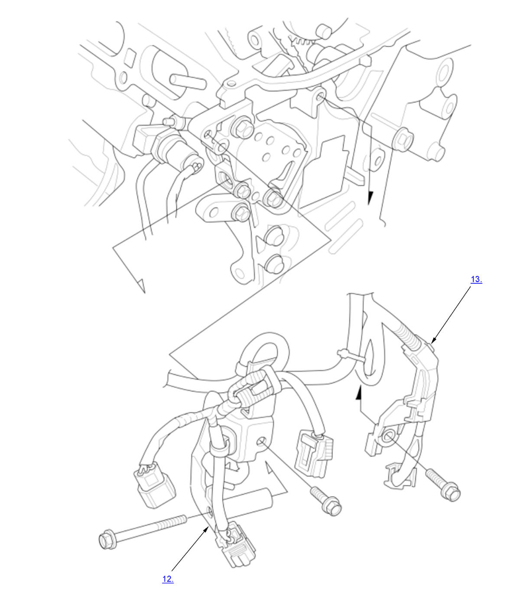
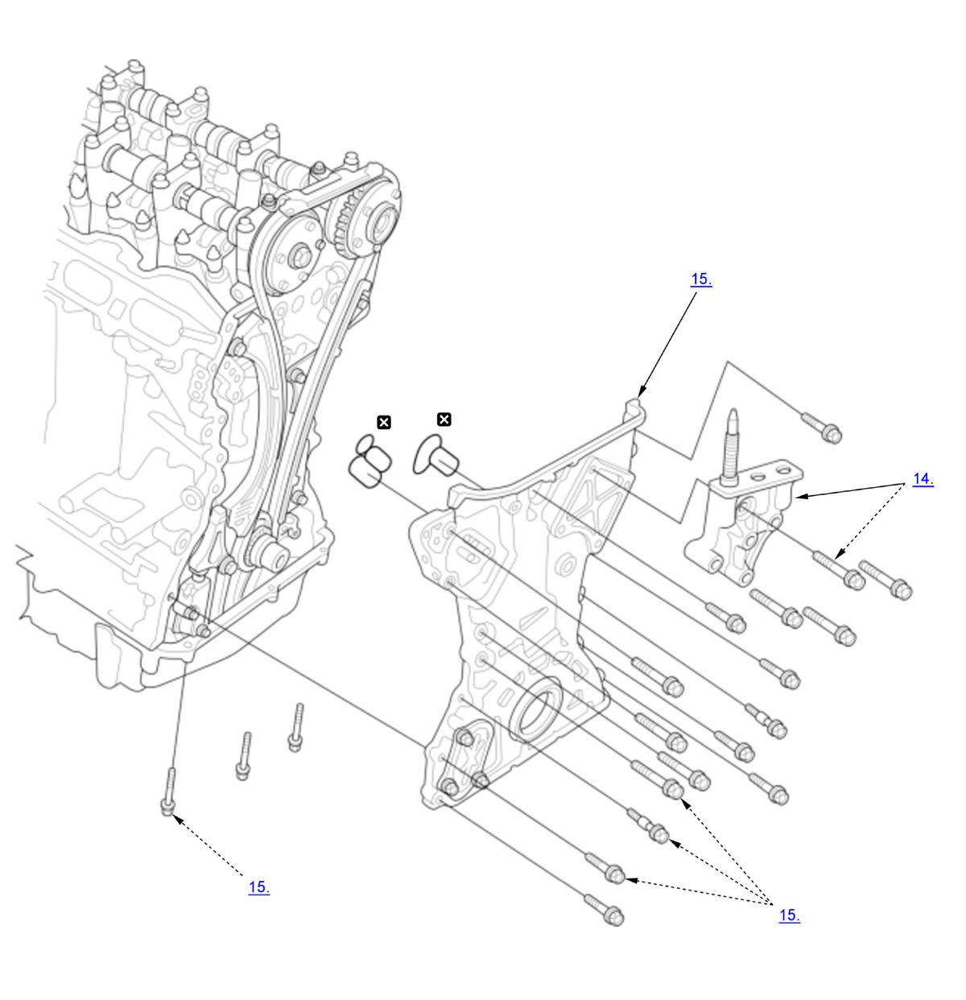
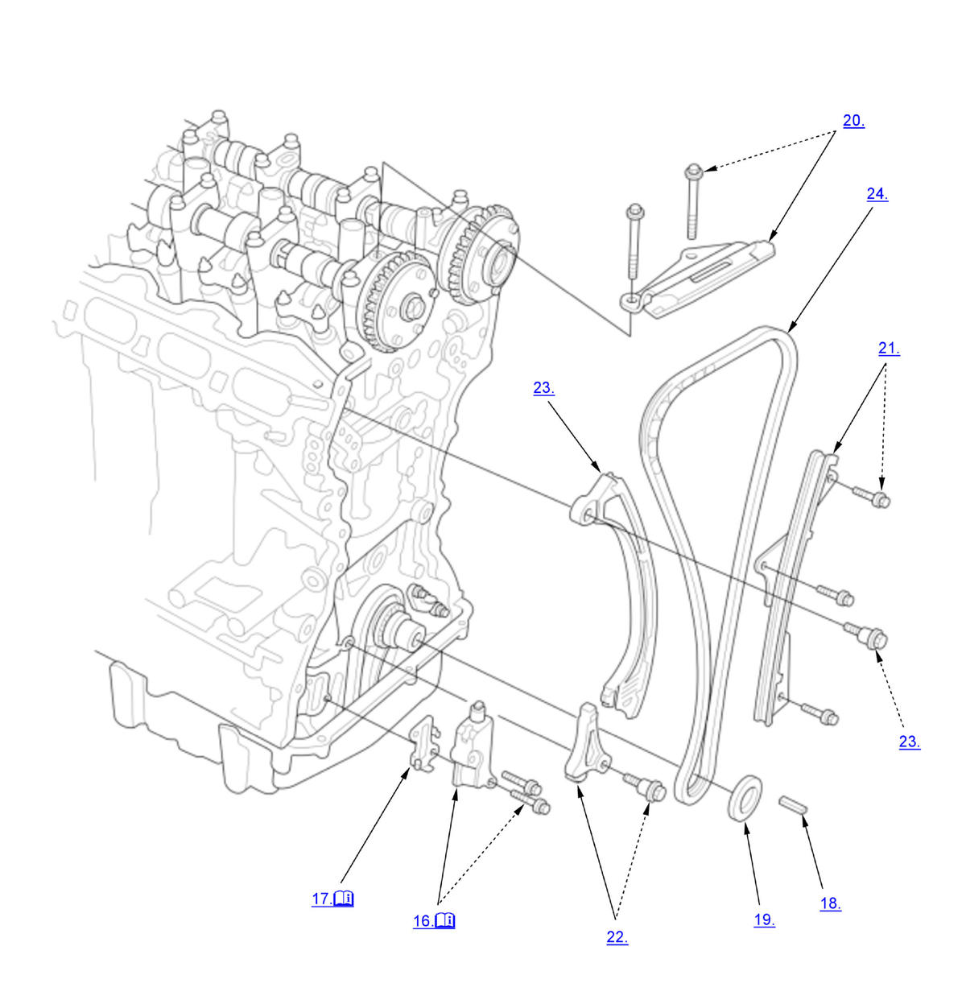

Cam Chain Removal and Installation (K20C1) (2017 2018 2019 2020 2021): Removal: Procedure
Numbered call-outs in figure pertain to list numbers in following procedure.

Courtesy of HONDA, U.S.A., INC.Numbered call-outs in figure pertain to list numbers in following procedure.

Courtesy of HONDA, U.S.A., INC. |
Replace |
Numbered call-outs in figure pertain to list numbers in following procedure.

Courtesy of HONDA, U.S.A., INC. |
Detailed information, notes, and precautions |
- Right Front Wheel - Remove
- Engine Undercover - Remove
NOTE: Remove the necessary part(s).
- Drive Belt - Remove
- Crankshaft Pulley - Remove
1. Turn the crankshaft so its white mark (A) on the crankshaft pulley lines up with the pointer (B) on the cam chain case, then remove the crankshaft pulley . - Drive Belt Auto-Tensioner - Remove
- Drive Belt Idler Pulley - Remove
- Cylinder Head Cover - Remove
- Side Engine Mount - Remove
- Rocker Arm Oil Control Valve - Remove
- VTC Oil Control Solenoid Valve A - Remove
- Turbocharger Bypass Control Valve Solenoid Pipe B - Remove
- Fuel Rail Bracket - Remove
- Harness Holder - Remove
- Side Engine Mount Bracket - Remove
- Cam Chain Case - Remove
- Cam Chain Auto-Tensioner - Remove
1. Set the No. 1 piston at top dead center (TDC). The "UP" mark (A) on VTC actuator B should be at the top. Align the TDC marks (B) on VTC actuator A and VTC actuator B. The TDC marks (C) on VTC actuator B should line up with the top edge of the head (D).
NOTE: If the marks are not aligned, rotate the crankshaft 360 degrees, and recheck VTC actuator A and VTC actuator B mark.2. Loosely install the crankshaft pulley. 3. Turn the crankshaft counterclockwise to compress the cam chain auto-tensioner.
4. Rotate the crankshaft counterclockwise to align the holes on the lock (A) and the auto-tensioner (B). 5. Insert a 1.2 mm (3/64 in) diameter pin (C) into the holes.
6. Turn the crankshaft clockwise to secure the pin.
NOTE: If the holes in the lock and the auto-tensioner do not align, continue to rotating the crankshaft counterclockwise until the holes align, then install the pin.
7. Remove the cam chain auto-tensioner. 8. Remove the crankshaft pulley.
- Cam Chain Auto-Tensioner Filter - Remove
NOTE: Check the cam chain auto-tensioner filter for damage. If filter is damaged, replace it.
- Key - Remove
- Spacer - Remove
- Cam Chain Guide B - Remove
- Cam Chain Guide A - Remove
- Cam Chain Tensioner Sub Arm - Remove
- Cam Chain Tensioner Arm - Remove
- Cam Chain - Remove